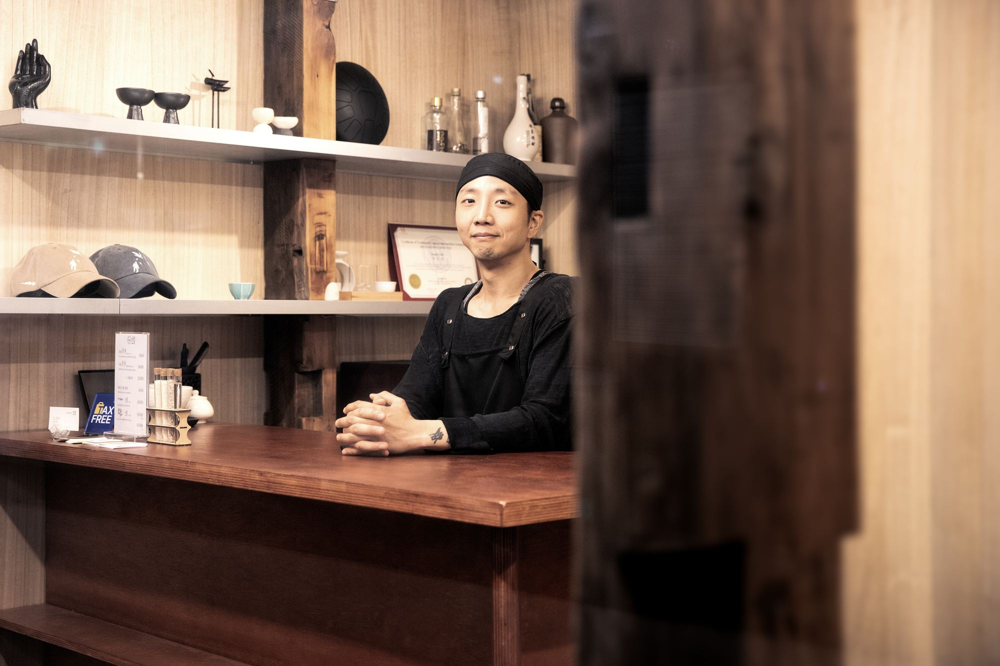
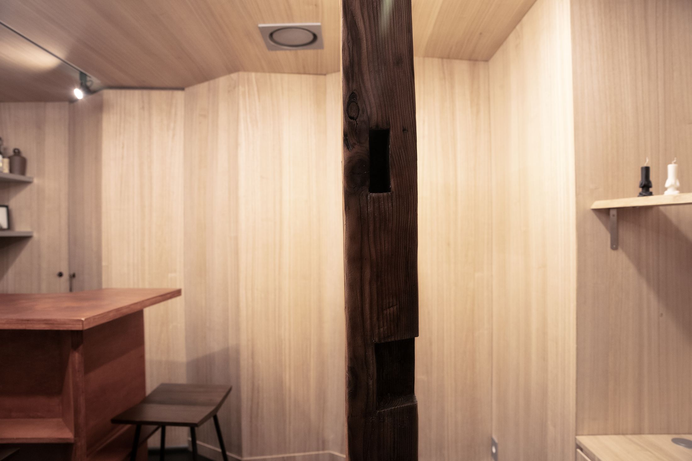
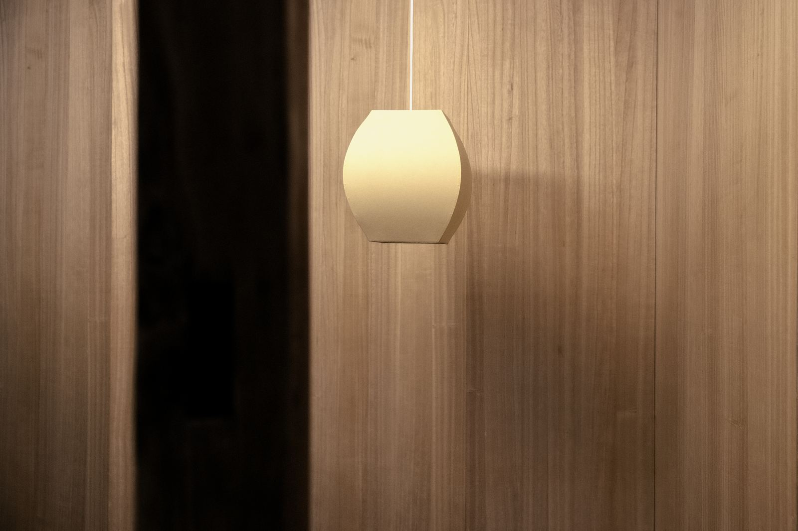
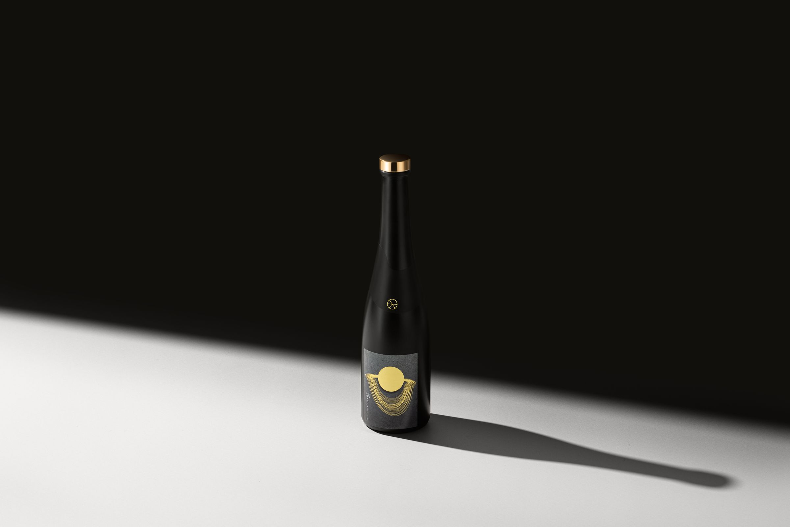

초월
방문 예약
초월
방문 예약
브랜드 — 초월초월,
초월,
넘어서다
초월(超越). 어떠한 한계나 표준을 뛰어넘음.
막걸리를 초월하다 — 초월의 이름이자 슬로건입니다.

땅끝 해남에서 자란 쌀과 찹쌀, 국내산 누룩, 그리고 물. 감미료를 넣지 않고, 세 번에 걸쳐 빚는 전통 삼양주 방식으로 만듭니다.
3번세 번 빚는 전통 삼양주
48일초월 6.9 발효 · 숙성
56일+DEEP 시리즈 완전 발효
0감미료





만드는 방법 — 삼양주세 번 빚는
세 번 빚는
막걸리
01밑술
고두밥에 누룩과 물을 더해 첫 술을 빚습니다.
02덧술
밑술에 고두밥을 더해 두 번째로 빚습니다.
03덧술
한 번 더 덧술해 세 번 빚기를 마칩니다.
04발효 · 숙성
초월 6.9는 48일, DEEP 시리즈는 56일 이상.
05병입
냉장 상태로 병에 담습니다.

라벨떠 있는
떠 있는
사람들
초월 6.9의 라벨에는 공중에 떠 있는 사람들이 그려져 있습니다. 세로로 내려 쓴 ‘초월’ 글자와 함께, 병마다 같은 장면이 담깁니다.

제품6.9 · DEEP · DEEP Down · SPKL → 양조장 · 예약테이스팅 세션 →
양조장 · 예약테이스팅 세션 →